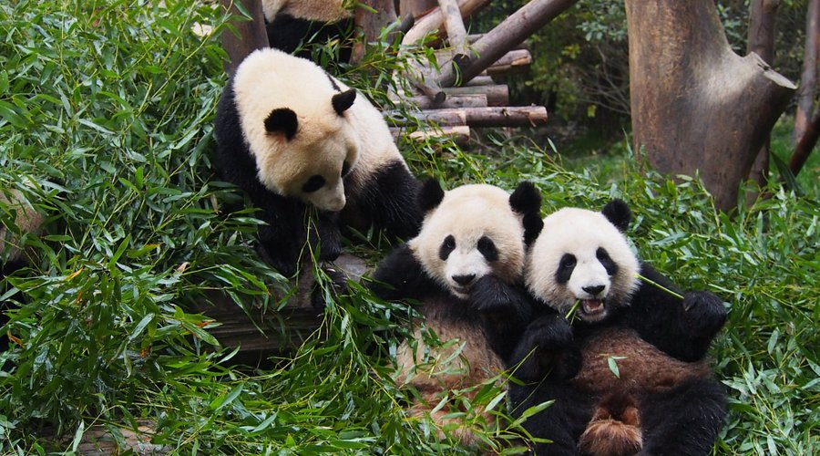
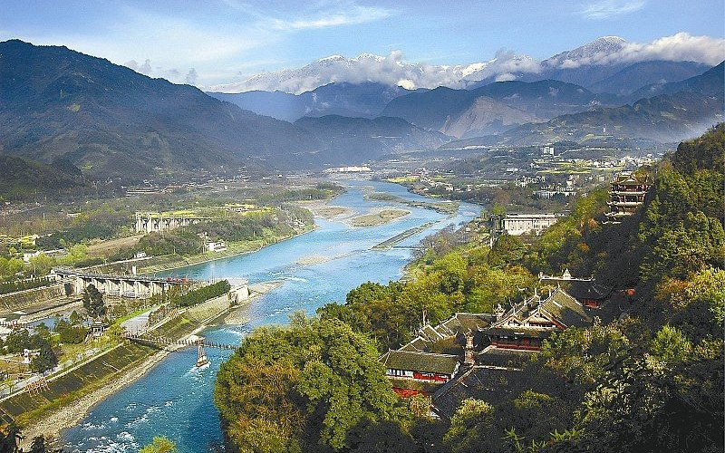
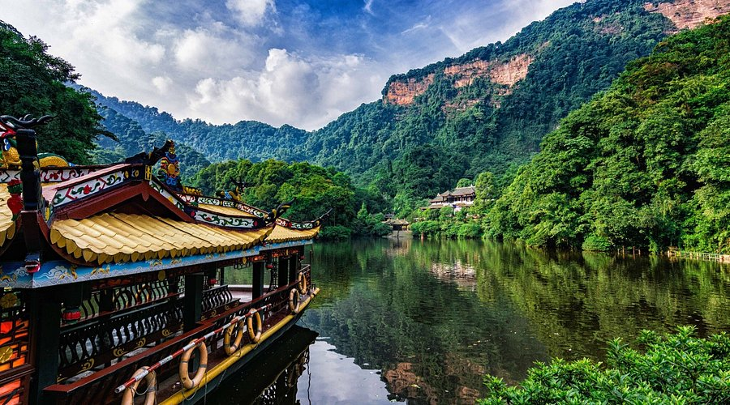

Chengdu Panda Base, 10 kilometers north of downtown, is the most popular spot to see giant pandas in their near-wild habitat. Covering 1,530 acres, the base has over 60 giant pandas (and red pandas!) living in bamboo groves, artificial caves, and open enclosures. The highlight is watching pandas eat bamboo—they can munch up to 30 pounds a day—and play on swings or climb trees. Don’t miss the “Panda Nursery” (where fluffy baby pandas are kept in incubators) and the “Sun & Moon Lake” (a peaceful spot with ducks and lotus flowers). The base is designed to mimic pandas’ natural Sichuan forest habitat, so you’ll feel like you’re wandering a bamboo forest while spotting these cute giants.
Morning (8:30 AM–10:30 AM): Pandas are most active (eating breakfast and playing); fewer crowds than afternoon.
Spring (March–April) or Autumn (September–November): Mild weather (15°C–22°C), pandas stay outdoors longer.
Entry Fee:55 CNY/adult; 27 CNY/students (with ID); free for kids under 1.3m.
Panda Volunteer Program: 2,000–3,000 CNY/person (half-day, includes feeding pandas and cleaning enclosures—book 1 month in advance).

Dujiangyan Irrigation System, 60 kilometers northwest of Chengdu, is a 2,200-year-old engineering wonder built by Li Bing (a Qin Dynasty official) to control the Min River’s floods and irrigate Sichuan’s farmland. It’s the world’s oldest still-operating irrigation system and a UNESCO World Heritage Site. The system has three key parts: “Fish Mouth” (a divider that splits the Min River into two streams), “Feishayan” (a spillway that drains excess water), and “Baopingkou” (a narrow channel that directs water to farmland). Today, you can walk along the riverbanks, visit the “Erwang Temple” (honoring Li Bing and his son), and hike the surrounding mountains for views of the system and green valleys. It’s a mix of natural beauty and human ingenuity.
Afternoon (2:00 PM–4:00 PM): Golden light for photos; cooler than morning (summer) or warmer than evening (winter).
Autumn (October–November): Clear skies, Min River water is blue, and trees turn golden.
Entry Fee:80 CNY/adult; 40 CNY/students; free for kids under 1.2m.
Boat Tour (Min River): 60 CNY/person (30 minutes, offers views of the irrigation system from the water).

Mount Qingcheng, 70 kilometers northwest of Chengdu, is one of China’s “Four Sacred Taoist Mountains”—a misty, 1,260-meter-tall peak covered in pine forests, waterfalls, and ancient Taoist temples. It’s known as the “Birthplace of Taoism” (the religion was founded here by Zhang Daoling in the Eastern Han Dynasty). The mountain has two sections: “Front Mountain” (with well-preserved Taoist temples like “Tianshi Cave” and paved trails) and “Back Mountain” (wilderness with streams and quiet villages). Most visitors choose Front Mountain: hike the 3-hour trail to the top, passing temples, stone bridges, and waterfalls, or take the cable car (10 minutes) for easy access. The air is fresh (filled with pine scent), and the mountain stays cool (18°C–25°C) even in summer.
Morning (9:00 AM–11:00 AM): Misty peaks (especially after light rain); fewer crowds on trails.
Spring (April–May): Wildflowers bloom; streams are full from spring rains.
Entry Fee(Front Mountain):80 CNY/adult; 40 CNY/students; free for kids under 1.2m.
Cable Car (Front Mountain): 65 CNY one-way/adult; 32 CNY one-way/student.